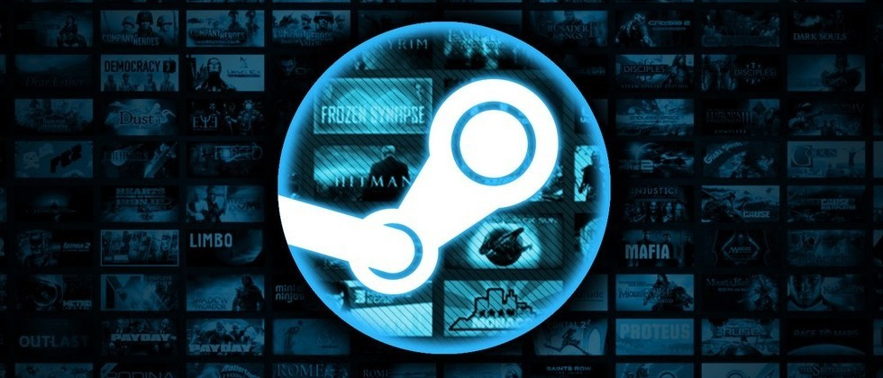
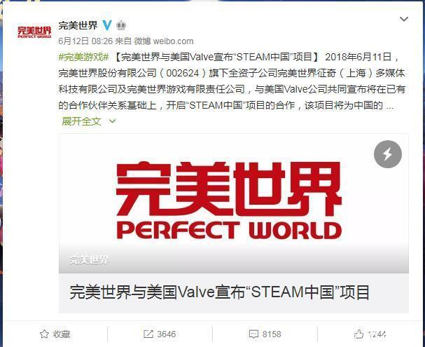
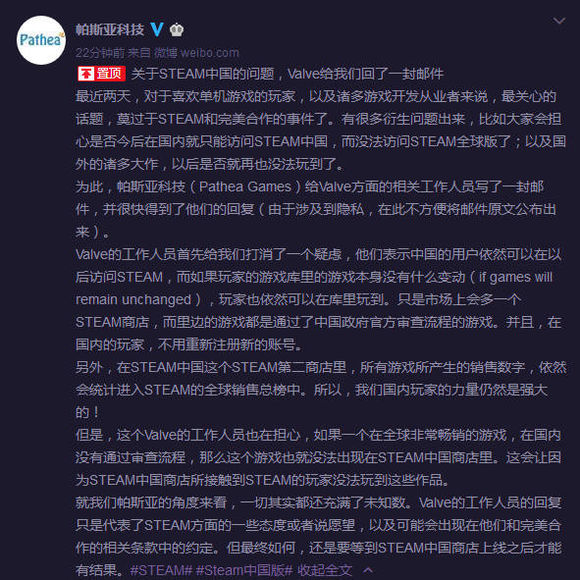

国服之后，再无Steam？
----Steam平台国服上线带来的伦理问题
Steam是什么
Steam是美国Valve公司旗下的一个正版游戏下载平台。近年来，它在国内的影响力越来越大。
玩家可以在该平台购买游戏、下载游戏、讨论、上传自己的作品、分享。
Steam在国内流行的始末
国内游戏市场有这样一个现象：精品游戏十分匮乏。
国产游戏相当“不争气”，一直以来缺乏精品的、得到国际认可的游戏。
造成国产游戏这种现状的原因，可以追溯到本世纪初。
中国也曾有过一段国产游戏的黄金时期，彼时大量一次性买断制的国产游戏进入市场。但由于盗版横行，开发商大多血本无归。
于是，国内游戏厂商逐渐趋向于开发网络游戏，采用游戏内付费增值的盈利模式。
这种模式保证了游戏厂商的稳定收入，但也造成一个问题：游戏市场的普遍浮躁。由于盈利的关键点在于充值活动的策划，游戏设计本身被分配的精力偏少。
于是，历经十余年发展，国内游戏行业虽然始终保持火爆局面，但实际上国产游戏的内容质量不断下滑，真正得到国际认可的少之又少。
同时，由于国内的文化审查制度，国外游戏想要进入国内市场可谓难上加难。
这两重原因导致国内可以选择的高质量游戏实际上十分匮乏。
近年，千禧一代开始步入社会、产生购买力。比起之前的一代人，千禧一代有相当一部分在童年时接触过电子游戏。他们不满足于国内游戏市场的现状，渴望更多的选择。
于是，来自国外的Steam平台开始在国内流行。借助Steam平台，玩家可以下载世界各地开发商的游戏作品。这极大丰富了玩家的选择面。
但由于平台上的游戏没有经过国内的审查，Steam平台一直处于法律的灰色地带。
Steam国服的登场
2018年中旬，完美世界宣布与Valve公司正式合作，将在国内推出Steam国服平台。
这一消息实属意料之外，情理之中。随着Steam平台在国内的影响力越来越大，其不可能一直在法律的边缘游走。
但无论如何，国内游戏界炸开了锅。人们关注的焦点在于：Steam国服推出以后，随之而来的必然是文化审查。这是否会导致许多游戏被“封禁”，限制了玩家的选择面？
不仅国内玩家产生了这样的担心，实际上Valve公司方面也表示了忧虑。
玩家的选择的权力，与国家的文化安全，究竟该如何权衡？
但目前来看，Steam国服的推出已成定局，而未来仍旧是未知数。